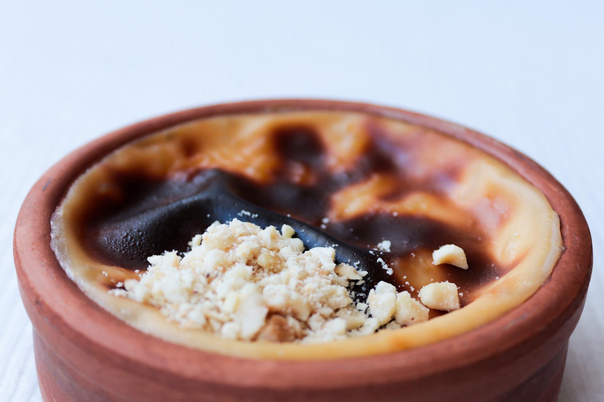

Sütlaç
Malzemeler:
-1 lt süt
-2 çay bardağı pirinç
-1 litre su
-3 yemek kaşığı pirinç unu
-1,5 -2 su bardağı toz şeker (eğer çok şekerli sevmiyorsanız 1,5 bardak kullanabilirsiniz) -1 su bardağı süt -Tarçın

Tarifi:
1 - Sütlaç yapmak için öncelikle pirinci yıkayıp su ile ateşe koyun.
2 - Pirinçler uzayıp suyu çekene kadar kaynatın, soğuk sütü ekleyin.
3 - 1-2 defa karıştırıp, kaynamasını bekleyin.
4 - Bu arada bir kasede pirinç ununu 1 su bardağı soğuk süt ile ezin.
5 - Tencerede kaynamakta olan sütten 1-2 kepçe alıp kaseye ekleyin. (pirinç unu ılınmış olmalı).
6 - Pirinç ununu tencereye ekleyin, ara sıra karıştırarak 10 dakika kadar pişirin.
7 - Toz şekeri ilave edip karıştırın ve 1-2 taşım kaynatın.
8 - Sütlacı kaselere paylaştırın.
9 - Soğuyunca sütlaçların üzerlerine tarçın serperek servis edebilirsiniz.
Afiyet olsun.